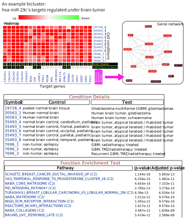

Introduction
BIMIR is a bicluster database that provides the condition-specific microRNA target predictions. Because miRNAs repress the gene expression post-transcriptionally, mRNA-miRNA paired profilings have been commonly used to predict the condition-specific miRNA targets. However, it is costly, and hence, there are not many publicly available mRNA-miRNA paired profilings for various cell conditions. In this study, we solved these problems by utilizing a large collection of public mRNA microarray data. Using the data, we created a matrix of fold change (FC) values for 20,639 human genes in 5,158 cell conditions (test vs. control group). By biclustering this matrix, we derived 29,815 biclusters for 451 microRNAs. To create these biclusters, first we extracted the initial seed biclusters full of signals (e.g., FC>1.3), and progressively extended them using PBE algorithm including a small number of noises. This process resulted in large and quite dense biclusters compared to those generated by other existing methods. Using the biclusters users can easily navigate the condition-specific miRNA targets and identify new experimental targets. |
 |
- Biclusters are searchable for microRNAs, tissues, diseases, keywords, target genes of interest, and their combination.
- The function enrichment results for bicluster targets are provided based on the mSigDB pathway (C2) and Gene Ontology (C5) categories.
- The heatmap for each bicluster are visualized and corresponding target genes and cell conditions are hyperlinked to Gene cards and GEO databases for detailed information, respectively.
- For bicluster target genes, the network node degrees (larger degrees represent more likely target targets), experimental evidences from miRTarBase, and protein network visualization based on STRING database are provided.
- The entire mRNA FC profiles, biclustering R code and all the biclusters are downloadable.
Citation
If BiMiR helps your researches, please let the others know! You can cite us as:
- SYoon, HCTNguyen, WJo, JKim, SChi, JPark, SKim, DNam. Biclustering analysis of transcriptome big data identifies condition-specific microRNA targets.
Nucleic Acids Research, 2019.DOI:https://doi.org/10.1093/nar/gkz139
Contact information
Dr. Dougu Nam - dougnam@unist.ac.kr
Dr. Hai Nguyen - hainct@unist.ac.kr
Notice
BiMIR server is currently managed externally. Please, contact us immediately if the server does not yield any search results.
If BiMiR helps your researches, please let the others know! You can cite us as:
- SYoon, HCTNguyen, WJo, JKim, SChi, JPark, SKim, DNam. Biclustering analysis of transcriptome big data identifies condition-specific microRNA targets. Nucleic Acids Research, 2019.DOI:https://doi.org/10.1093/nar/gkz139